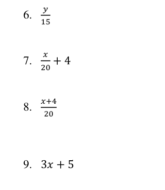

Math Exercises
9. Simplify the expression below:
\(3x+ 5\)
Additional Exercises
- Find the perimeter of a rectangle with a length of 7 inches and a width of 5 inches.
- Find the mean of the data set \({12, 22, 16, 12, 14}\).
- Find the volume of a cube with a side length equal to 3 inches.
